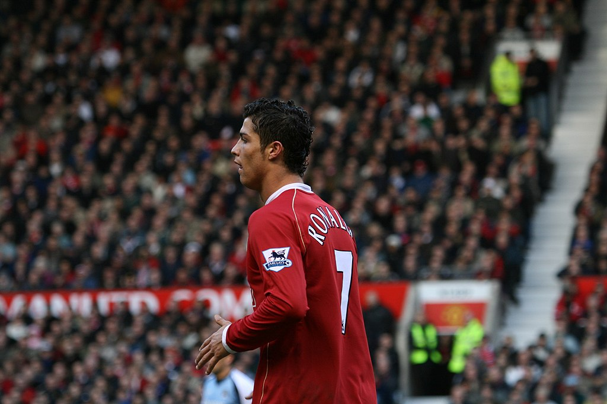

Cristiano Ronaldo, nacido el 5 de febrero de 1985 en Funchal, Madeira, Portugal, es uno de los futbolistas más famosos y exitosos de todos los tiempos. Es conocido por su impresionante habilidad técnica, velocidad y capacidad goleadora. Ronaldo comenzó su carrera profesional en el Sporting de Lisboa antes de trasladarse al Manchester United en 2003, donde alcanzó la fama mundial y ganó numerosos títulos, incluida la Liga de Campeones de la UEFA. En 2009, Cristiano Ronaldo se unió al Real Madrid en un traspaso récord en ese momento y continuó su éxito, ganando múltiples títulos de la Liga de Campeones y estableciendo numerosos récords goleadores. En 2018, Ronaldo se trasladó a la Juventus, donde también ha tenido un gran impacto. Además de sus logros en el campo, Cristiano Ronaldo es conocido por su dedicación al fitness y su ética de trabajo ejemplar. Ha ganado múltiples premios individuales, incluidos cinco Balones de Oro, que premian al mejor jugador del mundo, y es considerado uno de los mejores futbolistas de todos los tiempos. Su marca personal, CR7, es reconocida en todo el mundo, y es un ícono global tanto dentro como fuera del campo.
La chilena de Cristiano Ronaldo con el Real Madrid es considerada una de las mejores y más espectaculares jugadas de su carrera. Ocurrió el 3 de abril de 2018 durante un partido de la Liga de Campeones de la UEFA contra la Juventus. El gol se produjo en el estadio Santiago Bernabéu y dejó a los espectadores y aficionados del fútbol asombrados.
La celebración del "Siiiiiiiiii" de Cristiano Ronaldo es una de las más icónicas y reconocibles en el mundo del fútbol. Consiste en que después de marcar un gol, Ronaldo corre con velocidad y salta mientras gira su cuerpo en el aire, golpeando su pecho con ambos puños y extendiendo los brazos en un gesto de triunfo. Mientras realiza esta acción, suele gritar "Siiiiiiiiii" enérgicamente, lo que se ha convertido en su grito de celebración distintivo.
| Titulos con Real Madrid: | Cantidad: |
|---|---|
| Ligas | 2 Ligas |
| Copas del Rey | 2 C.R. |
| Super Copas | 2 S.C |
| Champions League | 4 Champions |